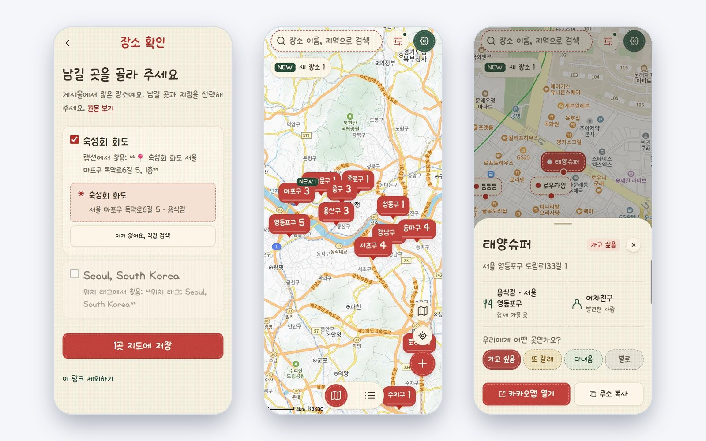
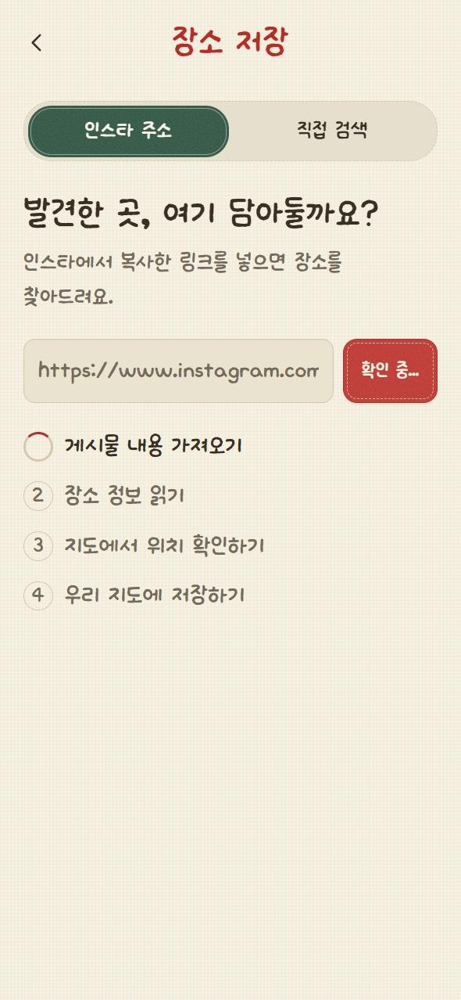
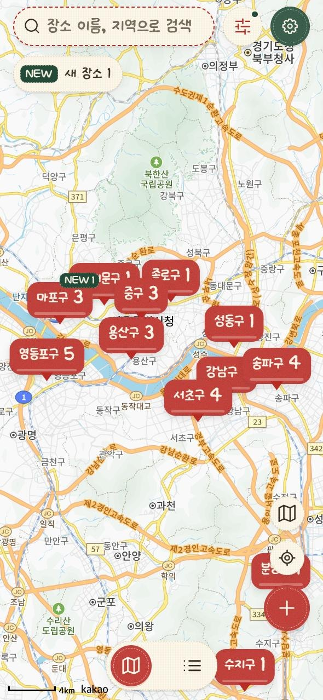
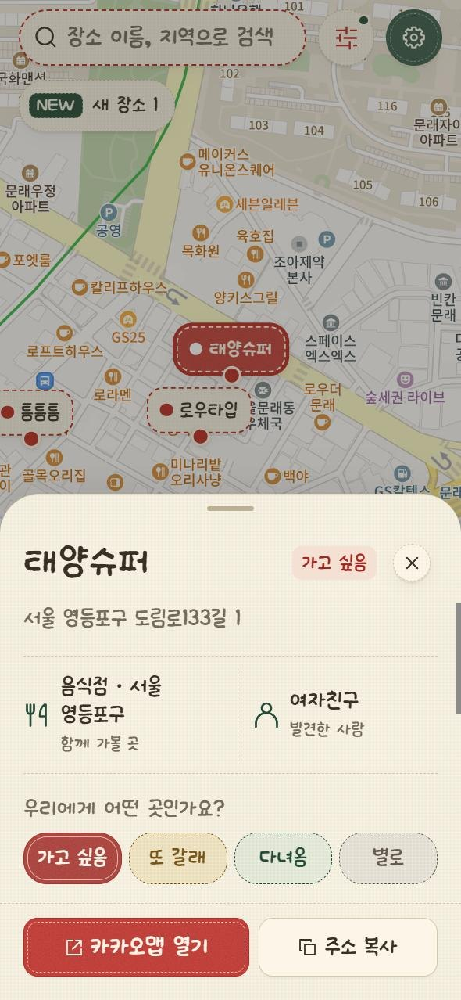
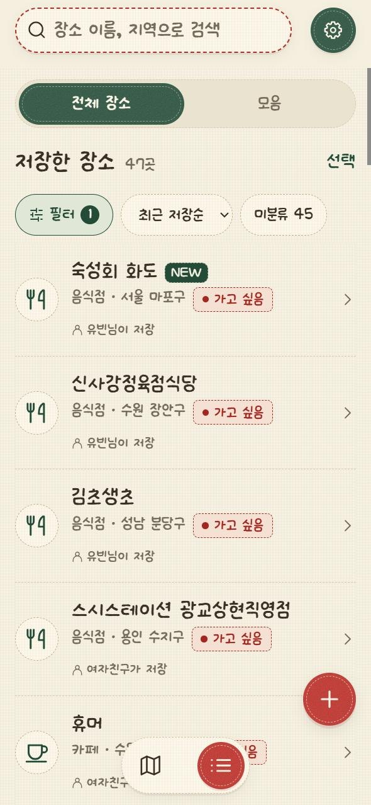
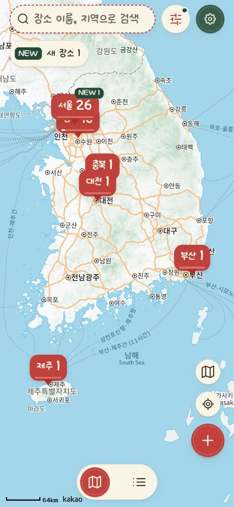
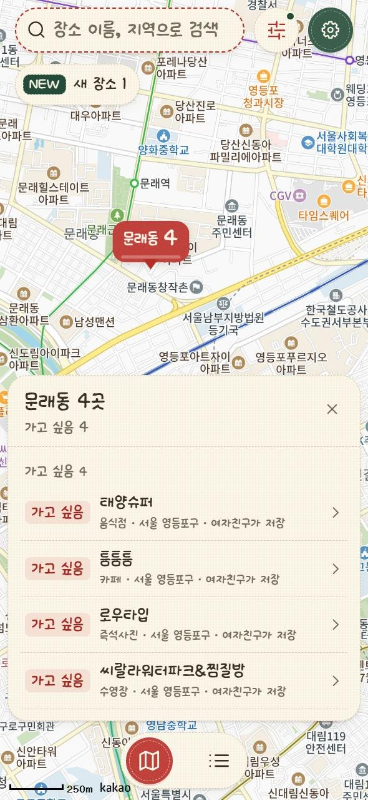
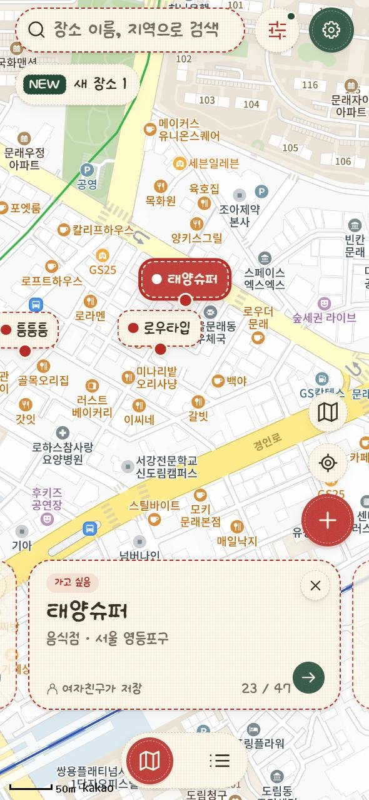

Case Study · Web Service
InstaDateMap
인스타 링크 하나를,
둘이 함께 쓰는 지도의 핀으로.
DM에 쌓이기만 하던 데이트 장소를, 상대도 바로 보는 지도로 옮겼습니다.
- 본인
- 문제 정의와 기능 명세, 자동 저장 기준, 화면 흐름, 데이터 보호 방식, 배포와 운영, 실사용 검증
- AI 지원
- 구현 코드 작성과 수정 (Claude Code·Codex). 명세에 맞는지는 테스트와 실기기로 직접 확인
- 기획에서 운영 배포까지3일
10월 21일 첫 커밋
10월 24일 운영 배포 - 실제 사용47곳
두 사람이 모아 쓰는 장소
2026.11.20 운영 데이터 - 자동화 테스트533개 통과
추출·저장·API·인증·동기화
커밋 81개 시점에 다시 실행
두 사람만 쓰는 지도라 PIN으로 잠겨 있어 라이브 링크 대신 운영 화면을 실었습니다.

01 가고 싶은 곳이 DM 대화 속에 쌓이기만 했습니다.
여자친구와 인스타에서 가고 싶은 곳을 발견하면 게시물 링크를 DM으로 주고받는 것이 전부였습니다. 링크는 대화 속에 묻혀 어느 동네인지 지도로 볼 수 없었고, 가고 싶은 곳과 다녀온 곳도 구분되지 않았습니다.
목표는 하나로 잡았습니다. 링크 하나만 넣으면 두 사람의 지도에 장소가 꽂히고, 상대도 바로 알 수 있게 하는 것입니다.
Before
DM 대화방
게시물 링크만 쌓이고, 어디인지는 하나씩 열어 봐야 압니다.
After
둘이 같이 보는 지도
링크를 붙여 넣으면 핀이 꽂히고 상대 휴대폰에 알림이 갑니다.
02 담고, 보고, 같이 쓰고, 지키는 앱입니다.
담기
링크 하나 또는 직접 검색
- 인스타 게시물·릴스 주소를 붙여 넣으면 장소를 찾아 저장
- 장소가 여러 곳이면 확인 화면에서 직접 고르기
- 링크 없이 카카오 장소 검색으로 추가
보기
지역으로 묶은 지도와 리스트
- 축소하면 도 → 시 → 구 → 동 이름으로 묶고, 확대하면 상호명 핀
- 리스트에서 상태·분류 필터, 최근 저장순·가까운 순 정렬
- 저장한 장소를 모음으로 묶기
같이 쓰기
상태, 메모, 알림, 실시간 동기화
- 상태 4종: 가고 싶음 · 또 갈래 · 다녀옴 · 별로
- 같이 고치는 메모와 저장한 사람 표시
- 상대가 장소나 메모를 남기면 휴대폰 알림, 화면은 실시간 갱신
지키기
둘만 여는 지도
- 사귄 날짜로 만든 여섯 자리 PIN, 해시로만 저장하고 시도 횟수 제한
- 모든 테이블에 행 단위 접근제어
- 지운 장소는 휴지통에서 복구




03 확실할 때만 자동으로 저장하게 했습니다.
링크가 핀이 되기까지 네 단계를 거칩니다. 가장 신경 쓴 것은 잘못된 곳이 지도에 꽂히지 않는 것이었습니다. 엉뚱한 지점이 저장되면 둘 다 그 장소를 믿고 찾아가게 되기 때문입니다.
- 추출: 게시물 글과 위치 태그에서 LLM이 장소 이름·지점·주소·지역 힌트를 뽑습니다. 추출 모듈을 분리해 Gemini 대신 Anthropic 모델로도 바꿀 수 있습니다.
- 대조: 카카오 장소 검색 후보의 이름, 지역, 주소, 지점명을 추출 결과와 하나씩 맞춰 봅니다.
- 저장 기준: 장소가 하나이고 이름·지역·주소가 모두 맞을 때만 바로 저장합니다. 여러 곳이거나 하나라도 어긋나면 확인 화면에서 사람이 고릅니다.
- 저장 후: 지도로 돌아와 새 장소에 NEW 표시를 붙이고, 상대 기기에 알림을 보냅니다.
2026.11.20 실제 릴스 링크 한 건을 등록한 순서입니다. 이 사례에서 발견한 문제는 05에 적었습니다.
04 핀이 겹쳐 읽히지 않는 지도를, 지역 이름으로 묶었습니다.
장소가 늘자 같은 동네의 핀이 겹쳐 지도를 읽을 수 없었습니다. 처음에는 숫자 원으로 묶었지만 숫자만으로는 어디에 몇 곳이 있는지가 보이지 않는다는 피드백을 받았습니다.
다시 설계할 때는 기능과 상황만 적은 명세를 먼저 쓰고, 그 명세로 시안 A와 B를 따로 만들었습니다. 두 시안이 같은 답을 낸 여섯 가지부터 적용하고, 갈리는 항목은 직접 골랐습니다. 숫자 원 대신 “영등포구 5” 같은 지역 이름표를 쓰고, 이름표를 누르면 다음 단계로 확대하는 방식이 그렇게 정해졌습니다.
단계 경계는 부동산 지도 서비스 두 곳의 확대 단계별 묶음 방식을 비교한 뒤 정했습니다. 저장 장소가 수십 곳 규모라 구로 바로 나누면 카드가 흩어져, 시 단계를 따로 두었습니다.
- 도64–128km
- 시8–32km
- 구1–4km
- 동더 확대
- 상호명 핀충분히 확대



05 두 사람의 데이터는 서버와 데이터베이스에서 지켰습니다.
브라우저에는 데이터베이스 권한을 주지 않았습니다. 모든 조회와 저장은 Next.js API 라우트 20개를 거치고, 서버만 데이터베이스에 접근합니다.
| 스키마와 마이그레이션 | Supabase(PostgreSQL). 기본 스키마 뒤에 접근 제한, 동기화, 알림, 링크 작업, 휴지통, 메모 알림, 모음까지 마이그레이션 10단계로 쌓았습니다. |
|---|---|
| 한 번에 저장 | 장소, 저장한 사람, 원본 게시물 연결을 SQL 함수 한 트랜잭션으로 저장합니다. 같은 카카오 장소면 새로 만들지 않고 저장 기록만 더합니다. |
| 접근 제어 | 모든 테이블에 행 단위 접근제어(RLS)를 걸고 서버 키만 접근합니다. 변경 요청은 Origin을 검사합니다. |
| PIN과 세션 | PIN은 salt를 붙인 scrypt 해시로만 저장합니다. 15분 동안 IP별 5회, 보드 전체 30회 실패하면 잠시 막습니다. 세션은 HttpOnly 쿠키, DB에는 그 해시만 둡니다. |
| 실시간 동기화 | DB 트리거가 보드 변경 번호를 올리면 서버가 그 번호만 브라우저로 보냅니다. 목록은 ETag가 같으면 다시 받지 않고, 마지막 목록은 기기에 보관해 화면을 비우지 않습니다. |
06 쓰면서 생긴 문제는 원인부터 찾아 고쳤습니다.
지역 이름표를 눌러도 지도가 그대로이거나 오히려 축소됐습니다.
- 원인
- 이름표를 누르면 “그 지역 장소가 모두 보이게” 범위를 맞추게 되어 있었습니다. 서울처럼 장소가 넓게 퍼진 지역은 이미 다 보이거나, 다 넣으려면 더 넓게 봐야 했습니다.
- 해결
- 이름이 실제로 바뀌는 다음 단계까지는 반드시 확대하도록 바꿨습니다. 이름만 같은 단계(서울 도 → 서울 시)는 건너뛰고, 한곳에 몰려 있어도 상호명 핀 단계보다 깊이 들어가지 않습니다.
- 확인
- 393×852 모의 지도에서 서울을 세 가지 확대 단계에서 눌러 모두 구 단계로 들어가는지 확인했고, 자동화 테스트를 통과했습니다.
같은 링크나 같은 메모를 둘이 동시에 고치면 한쪽이 사라질 수 있었습니다.
- 원인
- 메모는 마지막에 저장한 쪽이 앞의 저장을 덮었고, 같은 링크를 두 기기가 동시에 다시 분석하면 열려 있던 후보가 낡은 값이 될 수 있었습니다.
- 해결
- 링크는 먼저 시작한 작업이 소유하고 25초마다 갱신하며, 끊기면 90초 뒤 풀립니다. 메모는 원본 버전을 비교해, 충돌하면 덮어쓰지 않고 저장된 내용과 내 초안을 위아래로 보여 줍니다.
- 확인
- 운영 DB 마이그레이션과 배포까지 적용한 뒤 운영 반영 기록에 남겼습니다(2026.10.24).
이름과 주소가 다 맞는데도 자동 저장되지 않았습니다.남은 과제
- 현상
- 03의 숙성회 화도는 카카오 후보와 이름, 주소가 모두 맞았는데도 확인 화면으로 갔습니다.
- 원인
- 위치 태그에서 넓은 지역 이름을 거르는 목록이 한글(서울, 부산 등)만 담고 있어 “Seoul, South Korea”가 장소 후보로 남았습니다. 후보가 둘이 되면 자동 저장하지 않습니다.
- 판단
- 잘못 저장된 것은 아니고 한 번 더 누르는 불편입니다. 영문 지역 이름을 걸러 내는 수정과 테스트를 다음 작업으로 잡았습니다.
07 아직 남은 과제도 숨기지 않고 적어 둡니다.
- 가로 화면: 세로 휴대폰 중심으로 만들어, 짧은 가로 화면에서 알림과 지도 버튼이 겹칩니다. 다음 화면 설계는 가로 모드부터 시작합니다.
- 등록 화면 재설계: 확인 화면에서 지도 후보가 없는 장소를 체크하면 저장 대상이 0곳이 되는 문제를 재현해 두었습니다. 버튼 문구가 아니라 “이름 찾음 / 지도 연결 필요 / 제외” 상태를 나누는 문제라 화면부터 다시 설계합니다.
- 영상 속 장소: 릴스 자막과 음성에서 장소를 뽑는 기능은 아직 없습니다.
기술 구성과 테스트
- 화면: Next.js 16, React 19, TypeScript. 홈 화면에 추가해 앱처럼 쓰는 PWA, 카카오 지도 SDK.
- 서버: Next.js API 라우트 20개. 장소 추출은 Gemini 기본, 환경 변수로 Anthropic 선택. 카카오 장소 검색 REST API.
- 데이터: Supabase(PostgreSQL), 마이그레이션 10단계, SQL 함수, RLS, Realtime. 기기 쪽은 IndexedDB 캐시.
- 알림과 예약 작업: Web Push(VAPID), 보내지 못한 알림은 예약 작업으로 다시 시도.
- 테스트: Vitest 54개 파일, 533개 테스트. DB 함수는 PGlite로 실제 SQL을 실행해 검사합니다. 2026.11.20에 최신 커밋(bd781d7)에서 다시 실행해 모두 통과했습니다.
- 배포: Vercel(Node.js 24). DB 마이그레이션을 먼저 적용한 뒤 앱을 배포하는 순서를 문서로 고정했습니다.
해석 범위와 프로젝트 정보
- 사용 규모: 두 사람이 실제로 쓰는 앱입니다. 불특정 다수의 트래픽이나 부하를 검증한 서비스가 아닙니다.
- 수치 기준: 장소 47곳은 2026.11.20 운영 화면, 테스트 533개와 커밋 81개는 같은 날 저장소 기준입니다.
- 화면: 상대 이름은 “여자친구”로 바꿔 캡처했습니다. 위치는 공개된 가게 주소만 보입니다.
- AI 사용 범위: 코드는 AI 코딩 도구로 작성했습니다. 기능 명세, 자동 저장 기준, 시안 비교와 선택, 테스트 결과와 실기기 확인은 직접 했습니다.